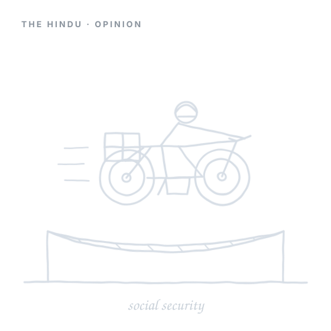

The Hindu
Opinion · Op-Ed
Formalising social security for the informal sector
On extending India's social security architecture — ESI, EPF, and the new labour codes — to gig and unorganised-sector workers. The piece argues that as the formal workforce steadily informalises, translating these codes into real protection will require closing long-standing gaps in coverage and delivery.